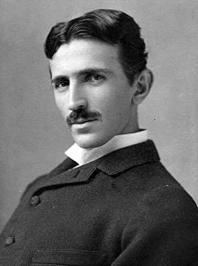

Nikola Tesla (/ˈtɛslə/ TESS-lə; Serbian Cyrillic: Никола Тесла,[2] pronounced [nǐkola têsla];[a] 10 July [O.S. 28 June] 1856 – 7 January 1943) was a Serbian-American[5][6][7] inventor, electrical engineer, mechanical engineer, and futurist best known for his contributions to the design of the modern alternating current (AC) electricity supply system.[8]
Born and raised in the Austrian Empire, Tesla studied engineering and physics in the 1870s without receiving a degree, gaining practical experience in the early 1880s working in telephony and at Continental Edison in the new electric power industry. In 1884 he emigrated to the United States, where he became a naturalized citizen. He worked for a short time at the Edison Machine Works in New York City before he struck out on his own. With the help of partners to finance and market his ideas, Tesla set up laboratories and companies in New York to develop a range of electrical and mechanical devices. His alternating current (AC) induction motor and related polyphase AC patents, licensed by Westinghouse Electric in 1888, earned him a considerable amount of money and became the cornerstone of the polyphase system which that company eventually marketed.
Slobodan Jovanović (Serbian Cyrillic: Слободан Јовановић; 3 December 1869 – 12 December 1958) was a Serbian and Yugoslav writer, historian, lawyer, philosopher, literary critic, diplomat and politician, and one of the most prominent intellectuals of his time. He was the professor at the University of Belgrade Faculty of Law (1897—1940), Rector of the University of Belgrade (1913–14 and 1920–21), and the President of the Serbian Royal Academy (1928–1931). He took part at the Paris Peace Conference (1919) as an expert for the Yugoslav Government.[1]
Jovanović was the Deputy Prime Minister (March 1941 - June 1942) and the Prime Minister of the Royal Yugoslav government-in-exile in London between January 1942 and June 1943. After World War II, the new Communist authorities of Yugoslavia sentenced him in absentia to 20 years' imprisonment. Jovanović remained at liberty for the rest of his life in London.
Stevan Stojanović (Serbian Cyrillic: Стеван Стојановић, pronounced [stêʋaːn stojǎːnoʋitɕ]; 9 January 1856 – 28 September 1914), known as Stevan Mokranjac (Serbian Cyrillic: Стеван Мокрањац, pronounced [stêʋaːn mokrǎːɲats]) was a Serbian composer and music educator. Born in Negotin in 1856, Mokranjac studied music in Belgrade, Munich, Rome and Leipzig while in his twenties. Later, he became the conductor of the Belgrade Choir Society and founder of the Serbian School of Music and the first Serbian string quartet, in which he played the cello. He left Belgrade at the beginning of World War I and moved to Skopje, where he died on 28 September 1914.[1]
Often called the "father of Serbian music" and the "most important figure of Serbian musical romanticism", Mokranjac is well-regarded and much revered in Serbia. Following his death, the Serbian Music School was renamed the Mokranjac Music School in his honour. He has been featured on the country's paper currency and that of the Federal Republic of Yugoslavia. In 1964, the Mokranjac family home in Negotin was restored and turned into a museum and musical centre. Celebrations of Mokranjac's life, known as "Mokranjac days", have occurred annually in the town since 1965. In 1981, a large statue of Mokranjac was constructed in the yard of the Mokranjac family home to mark the 125th anniversary of his birth.
Mihajlo Idvorski Pupin (Serbian Cyrillic: Михајло Идворски Пупин, pronounced [miˈxǎjlo ˈîdʋoɾski ˈpǔpin]; 4 October 1858[3][4] – 12 March 1935), also known as Michael Pupin, was a Serbian physicist, physical chemist and philanthropist based in the United States. Pupin is best known for his numerous patents, including a means of greatly extending the range of long-distance telephone communication by placing loading coils (of wire) at predetermined intervals along the transmitting wire (known as "pupinization"). Pupin was a founding member of National Advisory Committee for Aeronautics (NACA) on 3 March 1915, which later became NASA,[5] and he participated in the founding of American Mathematical Society and American Physical Society.
In 1924, he won a Pulitzer Prize for his autobiography. Pupin was elected president or vice-president of the highest scientific and technical institutions, such as the American Institute of Electrical Engineers, the New York Academy of Sciences, the Radio Institute of America, and the American Association for the Advancement of Science. He was also an honorary consul of Serbia in the United States from 1912 to 1920 and played a role in determining the borders of newly formed Kingdom of Serbs, Croats and Slovenes.[6][7